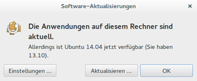
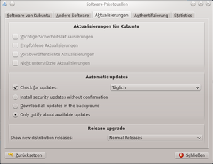

Upgrade auf Trusty
Archivierte Anleitung
Dieser Artikel wurde archiviert, da er - oder Teile daraus - nur noch unter einer älteren Ubuntu-Version nutzbar ist. Diese Anleitung wird vom Wiki-Team weder auf Richtigkeit überprüft noch anderweitig gepflegt. Zusätzlich wurde der Artikel für weitere Änderungen gesperrt.
Anmerkung: Das Supportende von Ubuntu 13.10 war am 17.7.2015.
Zum Verständnis dieses Artikels sind folgende Seiten hilfreich:
Dieser Artikel beschreibt, wie man ein Ubuntu-System von Ubuntu 13.10 auf Ubuntu 14.04 LTS aktualisiert (in der Ubuntu-Terminologie wird das als "upgrade", also Aufrüstung, bezeichnet, im Gegensatz zum "update", bei dem ein vorhandenes System nur aufgefrischt wird). Diese Version bietet im Vergleich zum Vorgänger viele neuere Software-Pakete. Außerdem ist Trusty eine Long-Term-Support-Version, das heißt, es gibt sowohl für die Desktop- als auch die Server-Version fünf Jahre lang Fehlerkorrekturen und andere Aktualisierungen. Eine Zusammenfassung der Neuerungen kann man im Artikel Trusty Tahr finden.
Grundsätzliches¶
Es gibt zwei Möglichkeiten, das neue System zu installieren:
Auf „normalen“ Desktop-Systemen kann das gewohnte Programm zur Systemaktualisierung starten.
Auf Systemen ohne grafische Oberfläche lässt der Vorgang in wenigen Schritten auf der Konsole erledigen.
Wenn ein System sehr stark von der Standardinstallation abweicht, können Probleme auftreten. Hinweise dazu finden sich unter Upgrade.
Vorbereitung¶
Auf Regressionen prüfen¶
Es kann sein, dass manche Dinge in der neuen Version nicht mehr oder zumindest schlechter funktionieren als in Ubuntu 13.10. Eine Liste der bekannten Probleme findet sich in den Release Notes (Veröffentlichungshinweisen).
Backup¶
Vor einem Upgrade sollte eine Datensicherung vorgenommen werden, für den Fall, dass etwas schief laufen sollte. Dazu eignen sich
ein Partitionsimage mit partimage. Eine Wiederherstellung des vorherigen Zustandes ist damit besonders einfach.
laufende Sicherungen der Daten und Konfigurationen mit Déjà Dup. Im Problemfall hat man dann die Möglichkeit, nach der Neuinstallation von Ubuntu 13.10 Daten wiederherzustellen. Konfigurationen sollten selektiv zurückgespielt werden, da mit der neuen Systemversion wesentliche Änderungen in den Konfigurationsdateien möglich sind.
Software überprüfen¶
Das Upgrade-Programm kümmert sich selbständig um die Entfernung von Software, die aus inoffiziellen Quellen stammt und die bei der folgenden Installation Probleme bereiten könnten. Es weiß aber nichts von Software, die ganz ohne die Paketverwaltung installiert wurde. Darüber hinaus kann es passieren, dass einige Programme nicht mehr in den offiziellen Paketquellen enthalten sind.
Wer Programme ohne die Paketverwaltung oder mittels "Checkinstall" installiert hat, sollte diese vorher entfernen. Wer nicht weiß, worum es gerade geht, ist nicht betroffen.
Wer Treiber nachinstalliert hat, sollte sich bewusst sein, dass es sein kann, dass diese in bestimmten Fällen mit der neuen Systemversion nicht mehr funktionieren. Das betrifft insbesondere auch fehlerhaft installierte Grafiktreiber. Mehr dazu auf der allgemeinen Seite zu Upgrade.
Upgrade- Ubuntu (Unity, Ubuntu-GNOME, Xfce)¶
Ein Upgrade auf Ubuntu 14.04 lässt sich wie folgt durchführen. Zuerst prüft man, ob im Software-Center unter dem Punkt
Bearbeiten → Software-Paketquellen
der Punkt "Freigabe-Aktualisierung" auf "normale Freigaben" gesetzt ist.
Nun wird der Update-Manager gestartet:
Unity
"System → Systemverwaltung → Aktualisierungsverwaltung"
Ubuntu-GNOME (GNOME-Shell)
"Anwendungen → Systemwerkzeuge → Aktualisierungsverwaltung"
Ist das System auf dem neuesten Stand, wird ein System-Upgrade angeboten. Es kann aber auch vorkommen, dass die neuere Ubuntu-Version (Upgrade) nicht angezeigt wird, sondern das laufende System erst aktualisiert werden muss; dies sollte man auch tun. 
Ist das System aktuell, kann die Aktualisierungsverwaltung wie oben erwähnt oder im Terminal [3] mit folgendem Befehl gestartet werden:
gksudo -- update-manager -c
Ein Klick auf "Aktualisieren" setzt das System-Upgrade in Gang. Zunächst werden die "Release Notes" (in Englisch) angezeigt, wo Hinweise auf wichtige Änderungen enthalten sind, die zu lesen sehr hilfreich sein kann. Weiter geht es mit "System aktualisieren".
 |
| Systemaktualisierung: Vorbereitung |
 |
| Systemaktualisierung: Starten |
 |
| Systemaktualisierung: Aufräumen |
Das System wird nun untersucht. Manche Pakete sind mit der neuen Ubuntu-Version nicht mehr kompatibel (das betrifft Pakete, die aus fremden Quellen installiert wurden, und Pakete, die durch andere ersetzt wurden oder inzwischen überflüssig sind). Diese Änderungen kann man sich detailliert auflisten lassen.
Nach dem Schließen aller geöffneten Anwendungen geht es weiter mit "Systemaktualisierung beginnen". Der damit gestartete Vorgang darf nicht mehr unterbrochen werden. Je nach Geschwindigkeit der Internetverbindung kann das Herunterladen der Pakete eine Weile dauern. Auch sollte der Prozess aufmerksam verfolgt werden, weil es an einigen stellen gegebenenfalls zu Abfragen kommen kann, die korrigiert oder bestätigt werden müssen. Insbesondere kann es sein, dass Konfigurationsdateien manuell ausgewählt oder geändert werden müssen.
Ist das System-Upgrade beendet und sind alle Pakete installiert, können unter dem Menü-Punkt: "Aufräumen" alte, nicht mehr benötigte Software-Pakete und -Bibliotheken bereinigt werden. Es ist ratsam, genau zu prüfen, was da gelöscht werden soll oder eventuell noch gebraucht wird.
Ist dies ebenfalls beendet, muss das System noch "neu gestartet" werden. Damit ist die eigentliche Installation schon abgeschlossen; eine letzte Überprüfung kann nun noch folgen. Eine Kontrolle, ob alle Programme, die in der Vorgängerversion manuell installiert wurden, fehlen, ist sinnvoll. Diese können bei Bedarf wieder neu installiert werden.
Upgrade Kubuntu (KDE)¶
 Das Upgrade von Kubuntu wird über die Muon-Aktualisierungsverwaltung durchgeführt. Zunächst sollte man das System auf den aktuellen Stand bringen. Dazu in der unteren linken Ecke über "Mehr … → Auf Aktualisierungen prüfen" die Paketquellen aktualisieren und rechts mit Klick auf "Aktualisierungen installieren" die Aktualisierung durchführen.
Nun muss unter "Mehr … → Erweitert … → Software-Quellen einrichten" (nach Eingabe des Passworts) im Reiter "Aktualisierungen" die unterste Einstellung zu "Release upgrade" auf "Normal Releases" oder "Long term support releases only" geändert werden. Nach einem Neustart der Muon-Aktualisierugsverwaltung erscheint im oberen Bereich des Programms der Hinweis "Eine neue Version von Kubuntu ist verfügbar." Das Upgrade auf Ubuntu 14.04 wird nun mit einem Klick auf "Aktualisieren" und der Eingabe des Passworts in Gang gesetzt, und ein neues Fenster öffnet sich.
Dieses deaktiviert Fremdquellen, welche man nach dem Upgrade manuell wieder aktivieren muss, und bindet die neuen Paketquellen ein. Anschließend bestätigt man die Frage "Möchten Sie die Systemaktualisierung starten?" mit "Systemaktualisierung beginnen".
Nun werden die einzelnen Pakete heruntergeladen und installiert. Dieser Vorgang darf nicht unterbrochen werden und kann je nach Geschwindigkeit der Internetverbindung eine Weile dauern. Nach der Installation der heruntergeladenen Pakete muss man die Frage "Veraltete Pakete entfernen" entweder mit "Entfernen" (empfohlen) oder "Behalten" beantworten. Zum Abschluss des Upgrades fordert das Programm dazu auf, den Computer neu zu starten.
Aktualisierung auf der Kommandozeile¶
Von Debian ist man vielleicht gewohnt, die sources.list so zu ändern, dass die nächste Debian-Version genutzt wird, um danach ein apt-get dist-upgrade durchzuführen. Dies sollte man unter Ubuntu nicht machen! Warum? Ubuntu arbeitet mit dem Update-Manager, und diesen sollte man auch beim Upgrade eines Servers benutzen.
Update-Manager verwenden¶
Hinweis:
Im Laufe des Upgrades ist es wahrscheinlich, dass die Netzwerkverbindung zumindest kurzzeitig unterbrochen wird. Führt man daher ein Upgrade auf einem Server durch, zu dem man nur via SSH Zugang hat, so wird man die Kontrolle über den Aktualisierungsprozess verlieren, da die SSH-Sitzung unterbrochen wird. Führt man also die Installation auf einem entfernten Rechner durch, so sollte man sie innerhalb von Screen starten. So besteht die Möglichkeit, die Verbindung wiederaufzunehmen und den Vorgang so wieder zu steuern.
Vor dem "Upgrade" auf eine neue Version muss man sicherstellen, dass das System auf dem neusten Stand ist:
sudo apt-get update # aktualisiert die Paketquellen sudo apt-get dist-upgrade # Aktualisieren der Pakete
Danach installiert [1] man das Programm:
update-manager-core
 mit apturl
mit apturl
Paketliste zum Kopieren:
sudo apt-get install update-manager-core
sudo aptitude install update-manager-core
Nun muss die Datei /etc/update-manager/release-upgrades geprüft werden. Die Datei muss wie folgt aussehen:
1 2 3 4 5 6 | [DEFAULT] # default prompting behavior, valid options: # never - never prompt for a new distribution version # normal - prompt if a new version of the distribution is available # lts - prompt only if a LTS version of the distribution is available Prompt=normal |
Da Trusty eine LTS-Version ist, wäre auch als letzte Zeile Prompt=lts in Ordnung.
Ggf. muss der Eintrag hinter Prompt mit einem Editor mit Root-Rechten [4] auf normal oder lts gesetzt werden. Danach wird der Vorgang über
sudo do-release-upgrade
ausgeführt. Ab jetzt muss man nur noch den Anweisungen auf dem Bildschirm folgen. Vorsicht ist angesagt, wenn Meldungen kommen, die die Änderung der Konfigurationen der einzelnen Systeme anzeigen. Man sollte jede Konfiguration prüfen und entweder die neue Version akzeptieren oder die eigene Version der Konfigurationsdatei behalten. Man informiert sich am besten vorher, welche Änderungen an den Serverpaketen bei dem Distributions-Upgrade durchgeführt wurden.
Problembehebung¶
Ubuntu 12.04¶
Eine automatische Benachrichtigung, dass man Ubuntu 12.04 LTS auf 14.04 LTS aktualisieren kann, erfolgt in der Regel erst nach dem 1. Point Release des Nachfolgers. Möchte man das System zu einem früheren Zeitpunkt wechseln, muss man die Aktualisierung von Hand anstoßen.
Links¶
update-manager
 - Dokumentation der verfügbaren Optionen
- Dokumentation der verfügbaren Optionen Release Notes - Informationen zu 14.04 Trusty Tahr
Release Notes - Informationen zu 14.04 Trusty Tahr- Upgrading from Ubuntu 13.10 to Ubuntu 14.04 - Offizielle Informationen zum Upgrade auf 14.04 Trusty Tahr
Saucy Upgrades
- Community-Informationen zum Upgrade auf Ubuntu 14.04 Trusty TahrUpgrading to Kubuntu 14.04
– Community-Informationen zum Upgrade von Kubuntu auf 14.04 Trusty TahrUpgrading from Ubuntu 13.10
- Upgrade von Ubuntu-GNOME-Remix 13.10 auf Ubuntu-GNOME 14.04 Trusty Tahr
- Erstellt mit Inyoka
-
 2004 – 2017 ubuntuusers.de • Einige Rechte vorbehalten
2004 – 2017 ubuntuusers.de • Einige Rechte vorbehalten
Lizenz • Kontakt • Datenschutz • Impressum • Serverstatus -
Serverhousing gespendet von